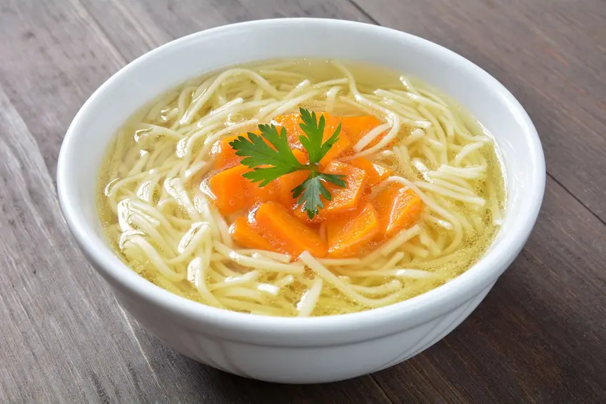

Rosół (Polish Chicken broth)

Rosół, homemade, traditional, delicious like grandma's. Traditional Polish soup. Broth on chicken meat with carrots, pasta and parsley.
Ingredients
- Chicken leg 1000 g
- Chicken wing 1000 g
- Carrot 200 g
- Parsley 80 g
- Onion 150 g
- Root celery 400 g
- Leek 70 g
Directions
- Cut the meat into smaller pieces, put in a pot and cover with cold water.
- Boil water in a pot (approx. 3 l), then reduce the heat and cook the meat over medium heat, removing the scum from time to time with a spoon.
- Cook for at least an hour.
- Wash and peel the carrot, parsley and celery root.
- Peel the onion and leek and cut into smaller pieces.
- Add the prepared vegetables to the broth.
- Add spices.
- Cook for at least another hour.
- Serve the Rosol with noodles, pieces of meat and vegetables from the broth, sprinkled with parsley.